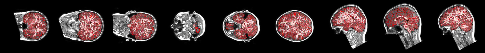
_dataGUTS2_GUTS_sample_data_bids_sub-gutsaumc0002_ses-01_anat_ORIG_sub-gutsaumc0002_ses-01_acq-ses01_ORIG_T1w_to__dataGUTS2_GUTS_sample_data_bids_sub-gutsaumc0002_ses-01_anat_ORIG_sub-gutsaumc0002_ses-01_acq-ses01_ORIG_T1w_brain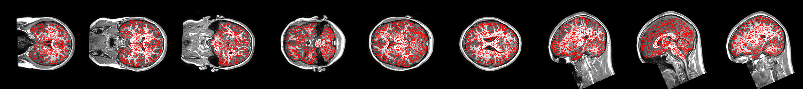
_dataGUTS2_GUTS_sample_data_bids_sub-gutsaumc0005_ses-01_anat_ORIG_sub-gutsaumc0005_ses-01_acq-ses01_ORIG_T1w_to__dataGUTS2_GUTS_sample_data_bids_sub-gutsaumc0005_ses-01_anat_ORIG_sub-gutsaumc0005_ses-01_acq-ses01_ORIG_T1w_brain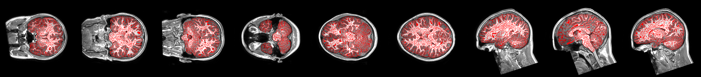
_dataGUTS2_GUTS_sample_data_bids_sub-gutsaumc0006_ses-01_anat_ORIG_sub-gutsaumc0006_ses-01_acq-ses01_ORIG_T1w_to__dataGUTS2_GUTS_sample_data_bids_sub-gutsaumc0006_ses-01_anat_ORIG_sub-gutsaumc0006_ses-01_acq-ses01_ORIG_T1w_brain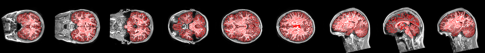
_dataGUTS2_GUTS_sample_data_bids_sub-gutsaumc0007_ses-01_anat_ORIG_sub-gutsaumc0007_ses-01_acq-ses01_ORIG_T1w_to__dataGUTS2_GUTS_sample_data_bids_sub-gutsaumc0007_ses-01_anat_ORIG_sub-gutsaumc0007_ses-01_acq-ses01_ORIG_T1w_brain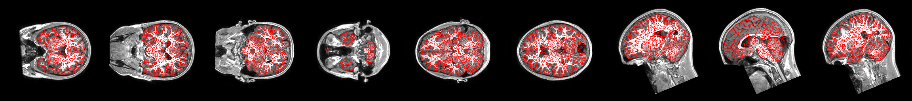
_dataGUTS2_GUTS_sample_data_bids_sub-gutsaumc0008_ses-01_anat_ORIG_sub-gutsaumc0008_ses-01_acq-ses01_ORIG_T1w_to__dataGUTS2_GUTS_sample_data_bids_sub-gutsaumc0008_ses-01_anat_ORIG_sub-gutsaumc0008_ses-01_acq-ses01_ORIG_T1w_brain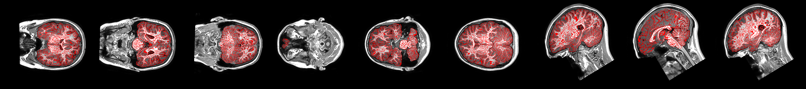
_dataGUTS2_GUTS_sample_data_bids_sub-gutsaumc0010_ses-01_anat_ORIG_sub-gutsaumc0010_ses-01_acq-ses01_ORIG_T1w_to__dataGUTS2_GUTS_sample_data_bids_sub-gutsaumc0010_ses-01_anat_ORIG_sub-gutsaumc0010_ses-01_acq-ses01_ORIG_T1w_brain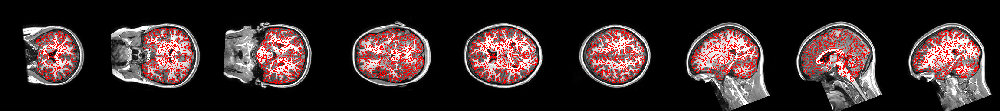
_dataGUTS2_GUTS_sample_data_bids_sub-gutsaumc0011_ses-01_anat_ORIG_sub-gutsaumc0011_ses-01_acq-ses01_ORIG_T1w_to__dataGUTS2_GUTS_sample_data_bids_sub-gutsaumc0011_ses-01_anat_ORIG_sub-gutsaumc0011_ses-01_acq-ses01_ORIG_T1w_brain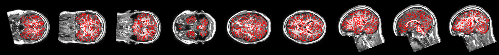
_dataGUTS2_GUTS_sample_data_bids_sub-gutsaumc0012_ses-01_anat_ORIG_sub-gutsaumc0012_ses-01_acq-ses01_ORIG_T1w_to__dataGUTS2_GUTS_sample_data_bids_sub-gutsaumc0012_ses-01_anat_ORIG_sub-gutsaumc0012_ses-01_acq-ses01_ORIG_T1w_brain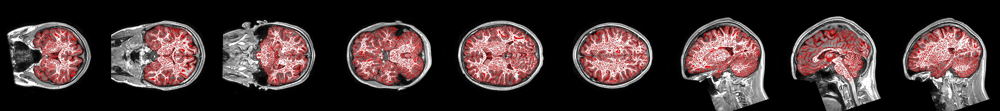
_dataGUTS2_GUTS_sample_data_bids_sub-gutsaumc0014_ses-01_anat_ORIG_sub-gutsaumc0014_ses-01_acq-ses01_ORIG_T1w_to__dataGUTS2_GUTS_sample_data_bids_sub-gutsaumc0014_ses-01_anat_ORIG_sub-gutsaumc0014_ses-01_acq-ses01_ORIG_T1w_brain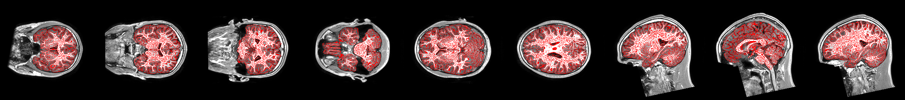
_dataGUTS2_GUTS_sample_data_bids_sub-gutsaumc0015_ses-01_anat_ORIG_sub-gutsaumc0015_ses-01_acq-ses01_ORIG_T1w_to__dataGUTS2_GUTS_sample_data_bids_sub-gutsaumc0015_ses-01_anat_ORIG_sub-gutsaumc0015_ses-01_acq-ses01_ORIG_T1w_brain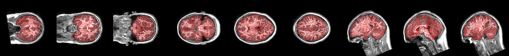
_dataGUTS2_GUTS_sample_data_bids_sub-gutsaumc0017_ses-01_anat_ORIG_sub-gutsaumc0017_ses-01_acq-ses01_ORIG_T1w_to__dataGUTS2_GUTS_sample_data_bids_sub-gutsaumc0017_ses-01_anat_ORIG_sub-gutsaumc0017_ses-01_acq-ses01_ORIG_T1w_brain